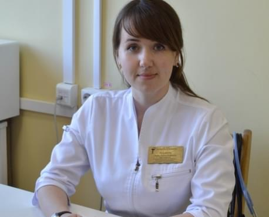
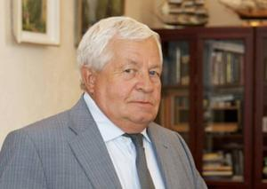

Tânăr specialist, Dna. medic urolog a povestit în ce mod reușește să restabilească potența pacienților săi în vârstă de 60-70 ani
Cel mai eficient remediu pentru restabilirea potenței, poate fi comandat acum cu 50% reducere pe site-ul oficial al dezvoltatorului- Institutul Clinic de Urologie. Citiți detalii în cele ce urmează.
Reporterul nostru a luat un interviu de la cel mai bun specialist în urologie al Institutului Clinic de Urologie, Camelia Rădulescu. Specialistul cu cel mai înalt indice și o abordare serioasă în domeniul tratării disfuncției erectile.
 Camelia Rădulescu- Dna. medic urolog, profesor la catedra de urologie ne-a povestit despre tratamentul contemporan al impotenței la Institutul Clinic de Urologie.- Dna. Camelia, aveți pacienți cu vârsta de 60-70 ani. Este cu adevărat necesar să faci sex la această vârstă?
- Bineînțeles! Mai ales bărbații. Viața sexuală determină starea generală a sănătății, este dacă vreți, un ceas biologic ce stabilește cât de repede va veni bătrânețea.
La cabinetul meu vin pacienți care suferă de prostatită și adenom de prostată, iar la întrebarea mea- când au făcut sex ultima dată, râd și răspund ceva de genul: ”Dna. doctor, n-am mai făcut sex de vreo 7 ani”. Bineînțeles că răspunsul lor mă surprinde. Aceasta e cauza prostatitei, care mai târziu se poate transforma în cancer de prostată.
Lipsa sexului dăunează organismului atât la 30 de ani, cât și la 40, 50, și chiar 70! Prostata este organul în care se formează lichidul seminal. În cazul în care nu este ejaculat, începe să se strice. În prostată se produce un proces de stagnare patologică (acumulări de microorganisme periculoase). Ele duc la inflamarea prostatei (prostatita). Inflamarea glandei prostatice pentru o perioadă lungă de timp determină apariția adenomului de prostată, dereglări de urinare și pielonefrita. Următoarea etapă după adenom este cancerul. La pacienții cu probleme de potență crește de 7 ori riscul să dezvolte cancer de prostată.
Aceasta este doar una din lungul șir de consecințe. Cu alte cuvinte, abstinența prelungită poate fi egalată cu moartea rapidă . Organismul uman are menirea să se înmulțească. Atunci când această funcție se estompează, organismul începe să îmbătrânească foarte rapid. Vasele sanguine se subțiază și se rup, crește riscul dezvoltării unui atac de cord sau accident vascular cerebral, se produc dereglări ale sistemului psihosomatic. Pacientul încărunțește rapid (dacă nu a încărunțit deja până la acel moment). Apar durerile articulare, îngârbovește. Chiar și insomnia care îi chinuie pe oamenii în vârstă este asociată cu lipsa de sex și producerea insuficientă a unui șir de hormoni.
Vreau să vă demonstrez câteva fotografii ca să vedeți ce se întâmplă cu sistemul genito-urinar și alte organe ale organismului unui bărbat care nu face sex.
Astfel arartă inflamația prostatei cauzată de stagnarea spermei (atunci când testiculele nu sunt golite). Inflamația persistentă conduce mai întâi la adenomul de prostată, iar mai târziu la cancer de prostată (conform statisticilor, din această cauză mor 38% din bărbați). În absența sexului, acest lucru se întâmplă întotdeauna, motiv pentru care adenomul de prostată este denumit boala vârstnicilor.
Cancerul de prostată diagnosticat la un bărbat în vârstă de 58 ani. Cauza- abstinența îndelungată (de la vârsta de 51 ani). Pacientul a murit.
Din cauza procesului de stagnare, pe pereții vaselor sanguine se sedimentează colesterolul, se pot forma tromburi. Tromburile prezintă sporirea riscului de a se produce un accident vascular cerebral sau atac de cord. Moartea pacientului a fost cauzată de atacul de cord, inima sa este prezentată în aceste imagini.
Ești încă de părerea că nu trebuie să faci sex? Viața sexuală caracterizează stabilitatea într-o relație. Din nefericire, majoritatea bărbaților impotenți rămân singuri. Femeile pot să facă sex până la vârsta de 70-80 de ani. Ele au nevoie de sex. Regula spune: cu cât viața sexuală este mai regulată, cu atât cuplul durează mai mult.
- Se spune că în clinica Dvs. folosiți medicamente unice pentru a restabili potența, acestea îi ajută pe bărbați să facă sex la orice vârstă. Este adevărat?
- Clinica noastră a avut întotdeauna o rată ridicată a vindecării diferitor afecțiuni. Folosim medicamente unice, elaborate de către savanții noștri. În ceea ce privește viața sexuală masculină, folosim un remediu elaborat de către institutul nostru, se numește .
Imediat după administrare, intensifică excitația (poate fi luat pe post de stimulent sexual inofensiv, în loc de Viagra), administrat regulat fortifică potența naturală. Acesta este unicul produs care acționează în acest mod, însă nu-l puteți găsi în farmacii.
- Vă rog să ne vorbiți despre acțiunea și eficacitatea acestui remediu.
- Este într-adevăr un remediu excelent. Puteți judeca din faptul că pacienții se înscriu cu câteva săptămâni înainte pentru consultație. Nu fac altceva decât să prescriu acest medicament, pe care îl puteți cumpăra la farmacia institutului nostru sau să comandați cu 50% reducere pe un site special.
Ce ține de eficacitatea , vreau să vă demonstrez rezultatele studiilor clinice efectuate de specialiștii institutului în perioada 2015-2016. La experiment au participat 50 de bărbați cu vârsta peste 50 de ani. Majoritatea subiecților studiului erau impotenți de câțiva ani.
Rezultatele studiului:
- Restabilirea completă a potenței (posibilitatea să facă sex cel puțin o dată pe săptămână) - 96% dintre subiecți
- Nivel ridicat al testosteronului - 94% dintre subiecți
- Reglarea urinării (inclusiv, frecvența) - 98% dintre subiecți
- Îmbunătățirea stării generale - 99% dintre subiecți
- Lipsa efectelor secundare - 100% dintre subiecți
Deci, este remediul perfect
Mecanismul inovațional de acțiune a remediului asupra sistemului urogenital masculin
Am hotărât să aflăm mai multe informații despre acțiunea produsului asupra sistemului urogenital masculin de la una dintre persoanele care a participat la elaborarea sa - doctor în științe, profesor, specialistul principal în domeniul urologiei, membru corespondent al Academiei de Științe din România, șeful catedrei de Urologie, Dl. Horia Sbanțu.
 ”Nu pot înțelege motivele bărbaților care ajung la vârsta de 50-60 de ani, renunță la viața sexuală, fiind siguri că nu există nicio soluție. De ce? Poți primi plăcere până la adânci bătrânețe!”- Dle. Horia, cum reușește să lupte eficient cu dereglările erectile ale organismului masculin la vârsta de 60-70 de ani? Care este mecanismul de acțiune?
Principala cauză a dereglărilor de potență este insuficiența de testosteron. acționează în această direcție.
Testosteronul este hormonul masculin care răspunde de excitare. Cu cât nivelul său este mai mare, cu atât bărbatul simte o atracție mai mare pentru femei și are o potență ridicată. Nivelul maxim al producerii de testosteron este notat la vârsta de 18-22 ani. După această vârstă, nivelul hormonului începe să scadă lent, ajungând la o perioadă când se reduce brusc. Astfel, nivelul scăzut de testosteron determină potența redusă și îmbătrânirea organismului.
În afară de vârstă, producția de testosteron este influențată de factori externi - vicii, alimentație nesănătoasă, ecologia (de exemplu, munca în condiții dăunătoare sănătății) și multe altele.
Acești factori conduc la accelerarea scăderii nivelului de testosteron, iar prin urmare, bărbatul devine impotent la o vârstă tânără.
Verifică simptomele care demonstrează nivelul scăzut de testosteron:
- Te simți fără putere
- Slăbiciune musculară
- Cefalee frecvente
- Probleme ale sistemului digestiv
- Te simți mereu somnoros
- Lipsa atracției sexuale
- Reacție încetinită
- Deficiențe de memorie
- Oscilații ale tensiunii arteriale
- Elasticitate scăzută a mușchilor și pielii
- Apatie și nervozitate
- Îți cade părul
- Te îmbolnăvești des
Prezența a cel puțin 2 dintre aceste simptome sugerează că nivelul testosteronului este scăzut. Pentru a restabili potența e necesar să ridici nivelul testosteronului.
restabilește perfect funcția de producere a testosteronului. Acționează direct asupra celulelor Leydig ale testiculelor la bărbați, ameliorând funcțiile acestora până la nivelul vârstei de 20-30 ani. Fapt ce determină fortificarea potenței și întinerirea organismului.
După cum am menționat mai devreme, pacienții care și-au pierdut orice speranță, revin la o viață sexuală normală după o cură de 3-4 săptămâni cu . E necesar să fie administrat zilnic. Primele schimbări pot fi observate deja peste câteva zile. Produsul restabilește potența, are un efect benefic asupra întregului organism masculin, deoarece testosteronul este principalul hormon masculin.
Ați decis să vindeți acest produs CU 50% REDUCERE?
Exact! Voi trimite acest produs tuturor bărbaților care vor să restabilească potența. La moment, stocul conține aproximativ 1 mie de cutii, iar noi (eu și colegii mei) le vom trimite persoanelor care vor plasa primii o cerere pe site-ul special.
Repet - PREȚUL ESTE REDUS DE 2 ORI
este complet natural - conține extracte concentrate din plante aduse din întreaga lume, extrem de benefice pentru organismul masculin. Prin urmare, poate fi administrat fără prescripție medicală, la domiciliu.
Spre deosebire de Viagra, intensifică dorința sexuală și potența firească, exact ca și în cazul în care apar pe cale naturală, fără să iei stimulente.
Ce trebuie să faci ca să Comanzi cu 50% reducere?
Indicați țara, numele și numărul de telefon în formularul de mai jos. Cererea va fi transmisă consultanților, veți afla dacă balsamul este potrivită pentru tratarea problemei dvs., aveți posibilitatea de a primi răspuns la întrebările care vă interesează și să aflați prețul final, după aplicarea reducerii.
Este adevărat că ajută să restabilească potența la bătrânețe? Rezultatele sondajului
Pe pagina web a Institutului Clinic de Urologie (acolo unde a fost elaborat ) a fost efectuat un sondaj pentru pacienții care au utilizat .
Sondajul conține o singură întrebare: ”Te-a ajutat să restabilești potența FIREASCĂ?”
Rezultatele sondajului:
Rezultatele administrării :
Comentarii
Claudiu
Am comandat , fapt pentru care vă mulțumesc. Consultantul a promis că-l voi primi în 5 zile la poștă.
Damian O.
Și eu l-am comandat. Nu pot face sex deja de un an, dar n-am de gând să mă opresc. Sper că mă va ajuta. Am contraindicații la Viagra, probleme cu inima.
Marius Eleș
Confirm. e super. Am 54 de ani și ultima perioadă potența mea era la nivelul 0. Aveam atracție foarte rar. Am încercat multe remedii. Rețete naturiste, pastile, am consultat mai mulți medici urologi. Doar acest produs m-a vindecat. Acum fac sex regulat cel puțin o dată în săptămână. S-a ameliorat chiar și starea generală, testosteronul este foarte benefic pentru bărbați.
Ciprian
După tratamentul cu am simțit că am întinerit
Lorin F.
L-am comandat. Încă mai este pe stoc. Livrare prin poștă. E prima dată când comand ceva online, nimic complicat. E necesar să indici doar numărul de telefon. M-a sunat un manager pentru a indica adresa de livrare.
Matei
Am citit informații despre pe site. Impresionant! Un produs extrem de benefic pentru bărbații în etate. Testosteronul te apără de bătrânețe!
Elena
Cred că am să comand pentru soțul meu. La 48 de ani a devenit practic impotent. Eu am 41 și n-am de gând să renunț la sex.
Ovidiu Talvac
Vecinul meu în vârstă de 65 de ani are o viață sexuală regulată. Folosește acest produs. Am văzut această cutie la el acasă.
Sorin Kilcoș
Am comandat
Edmond
Incredibil... am început să-l iau acum o săptămână, dar simt că am întinerit cu 10 ani. Până acum mă ajuta doar Viagra, dar are o mulțime de efecte adverse. Recomand acest medicament tuturor!
Paul P.
Am 61 de ani și de 5 ani eram impotent. Am consultat un medic urolog (pentru altă problemă) care mi-a prescris pentru ameliorarea stării generale. După tratament am început să simt atracția sexuală. Câteodată apare potența și pot să fac sex. Mă simt mult mai bine.
Ilarie Felțan
L-am luat ieri de la poștă. Prețul e bun.
Leonard Facareanu
În 3 săptămâni am uitat ce înseamnă disfuncția erectilă. Îl recomand tuturor. Singurul produs care funcționează cu adevărat. Am 59 de ani.
Raul Heljiu
Am comandat. Operatorul a spus că au mai rămas 200 de cutii, dar stocul se golește rapid.